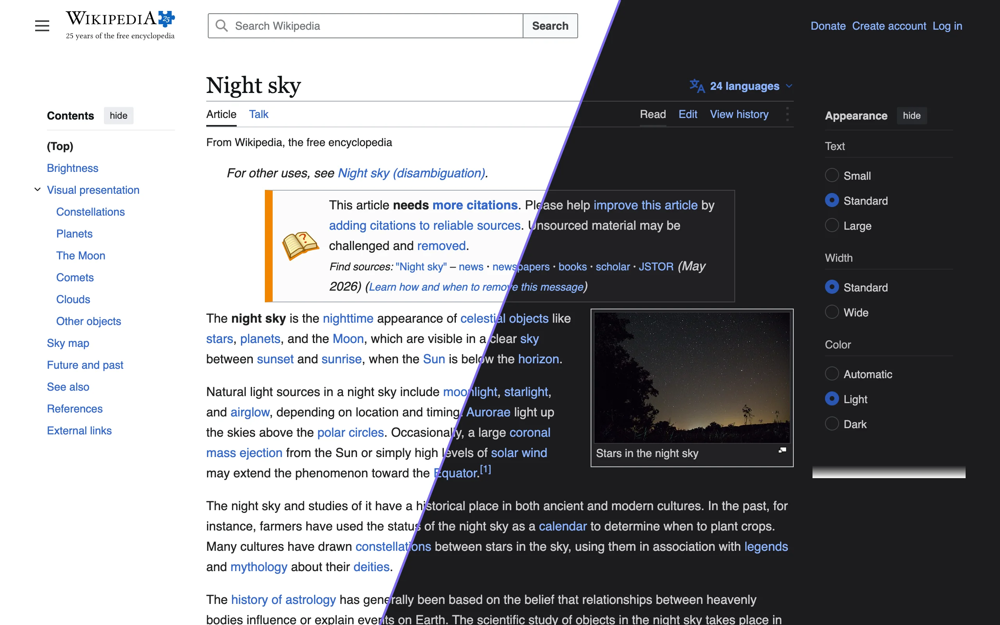
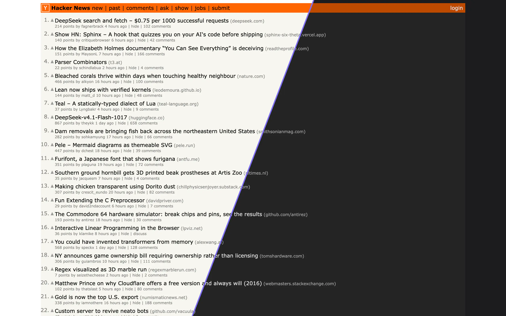
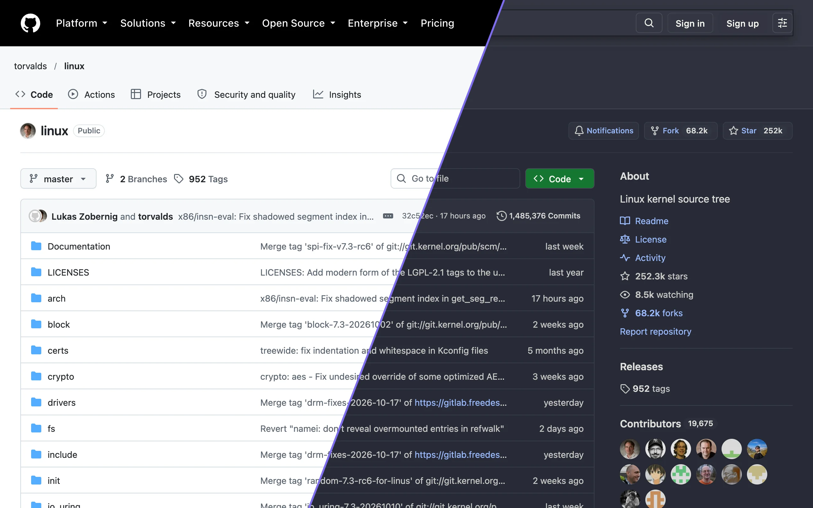
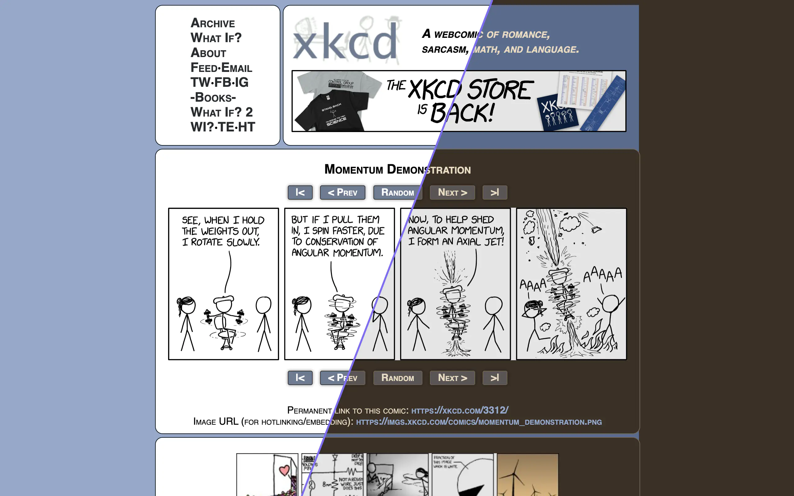

Auto, On or Off
Auto follows your system’s Dark Mode or a schedule (20:00 to 07:00 by default). On always darkens websites; Off never does.
Free and open source
Nyx is a dark mode extension for Safari on iPhone, iPad and Mac. It reads the colors in each page’s stylesheets and swaps in darker ones, so you can still tell which site you’re on.
Safari on iOS, iPadOS and macOS. Also runs in Chrome, Edge and Firefox.




Left of the line is the page as it ships; right is Nyx’s Dark theme. Links are still blue. The orange header stays orange, just darker. The Dracula theme, one of seven taken from code editors. Sepia. The comic is dimmed a little, not inverted.
How it works
The quick way to darken a page is to invert it, which turns photos into negatives and orange buttons blue. Nyx reads the page’s stylesheets instead and picks a new color for each one, depending on whether it paints a background, text, a border or a shadow.
A blue link becomes a lighter blue, not orange. A saturated background stays saturated and gets darker.
Light backgrounds map to a few shades of the theme’s background, so a menu or a code block is still a shade apart from the page behind it.
Colored text is lightened until it reaches at least 4.5:1 contrast with the background, the WCAG level for body text.
Features
Auto follows your system’s Dark Mode or a schedule (20:00 to 07:00 by default). On always darkens websites; Off never does.
From the toolbar menu, give any site its own status and theme, pause it until tomorrow, or fine-tune dynamic colors, background images and image inversion.
Apply a setting to a whole domain, a subdomain, a host with a port such as 192.168.1.2:8080, or a single page.
If a site already has a dark mode, Nyx stays out of the way, and it checks again when the site switches its own theme. You can turn this off for any site.
Seven basics such as Dark, Black, Gray and Sepia. Six single-color themes, six moodier ones like Ember and Candlelight, and seven from code editors: Dracula, Nord, One Dark, Solarized, Gruvbox, Catppuccin and Tokyo Night.
Pick a background color, a text color, image brightness and grayscale. Any theme can be shared as a link that someone else can import.
Photos are dimmed to the theme’s image brightness, and grayed out if the theme sets grayscale. Small dark icons on transparent backgrounds are inverted so they don’t vanish.
Toggle the current site, step it through Auto, On, Off and Default, pause it until tomorrow, cycle themes, or set the global status.
Settings sync between your devices through iCloud. You can also change them from Shortcuts, a Focus Filter or a Control Center control.
Install
Nyx isn’t on the App Store or the Chrome Web Store yet. For Safari, build it from source with Xcode. For Chrome, Edge and Firefox, download a zip from the latest GitHub release or build it with Node.js.
Build the Nyx app with Xcode, then turn on the extension in Safari.
apple/README.md.Download nyx-chrome or nyx-firefox from the latest release, or build the extension with Node.js:
npm install
npm run buildchrome://extensions, turn on Developer mode, choose “Load unpacked” and pick the unzipped folder (or dist/chrome if you built it).about:debugging, choose “Load Temporary Add-on” and pick the zip (or dist/firefox/manifest.json).Privacy
Nyx has no servers and no accounts, so there is nowhere for your browsing to go.